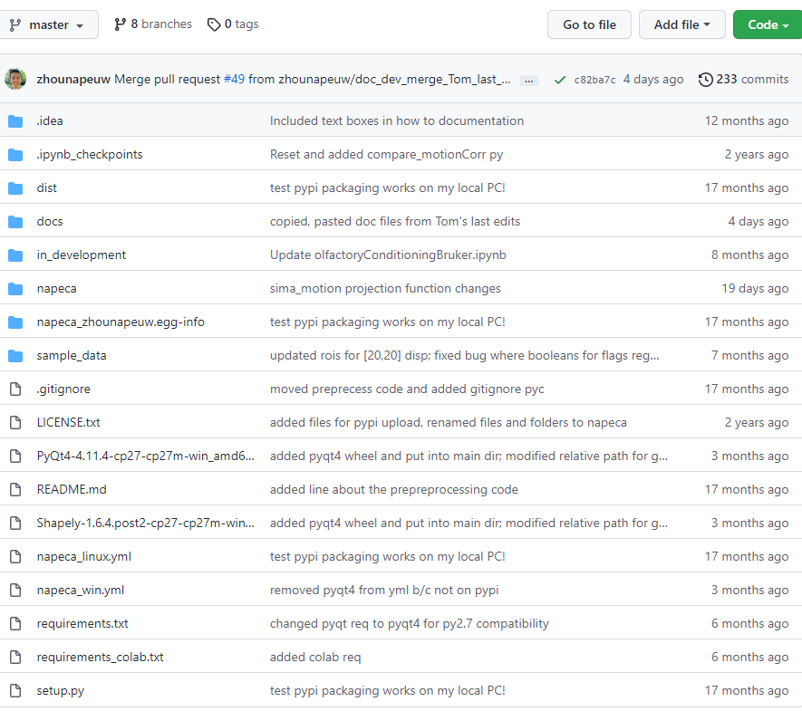
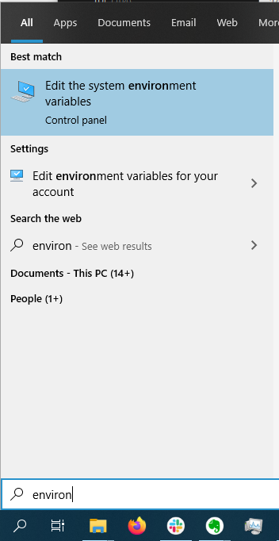
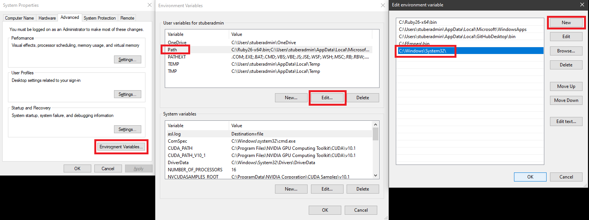

Anaconda, Jupyter Notebook, SIMA Installation Guide\uf0c1
This tutorial will walk you through how to install python and the Anaconda Prompt/Navigator, the necessary prerequisites to run the calcium imaging preprocessing analysis. The steps involve:
- Install Anaconda: this is a graphical and command line interface that allows you to manage multiple, unique instances (called environments) of python that can be tailored to different projects. Think of Anaconda as a drawer file organizer where each folder (ie. environment) pertains to a specific project/topic.
- Set up an Anaconda environment for the specific calcium imaging preprocessing project: An environment is a directory/instance that contains a collection of python packages that the user can customize and tailor to a specific project. This is especially important if you have multiple projects that require different versions of python or conflicting packages/libraries that must be separated.
- Open and run jupyter notebook, an application that allows for editing, running, and prototyping python code.
Unfortunately and fortunately (it’s beneficial to learn some coding!) for you, this will involve some tinkering with the Anaconda command prompt. To facilitate this process, all commands to be executed in the command prompt are within a code block.
- Download the Anaconda Installer: https://www.anaconda.com/distribution/#windows and run the installer.
- The 64-bit graphical installer is recommended for most PCs.
- Choose Python 3.9 version for most up-to-date python version.
- Note: You can still install a Python 2.7 environment in Anaconda.
- Follow the installer prompts: Hit “Next”, “I Agree”, “Next” for Just Me (Installation Type)
- Indicate the path (default path is recommended) to install Anaconda and hit “Next”
- On the Advanced Installation Options window, keep the default settings and hit “Install” and continue through the installation until the end (ie. Hit “Next”s)
Starting Anaconda and installing an environment\uf0c1
- Download the NAPE analysis script repository from this link: https://github.com/zhounapeuw/NAPE_imaging_analysis
Once on the GitHub repository, click the “Code” dropdown followed by “Download zip”.
- Take note of where the downloaded zip file resides and unzip the directory.
To unzip files on Windows, right click the zip file and click “Extract All”. To unzip files on Mac, double click on the zip file.
In both instances, unzipping a file will create a folder of the same name as the zip file.
- Search for “Anaconda” in the start menu and click “Run as administrator”
This is how the anaconda prompt looks like at the start. The current environment is in parentheses and the following text indicates what directory you currently are in (equivalent to if you had the finder/explorer window open to that specific folder).
- Note: an environment is a directory that contains a collection of python packages that the user can customize and tailor to a specific project. One can create, edit, and delete any number of environments as he or she chooses.
Copy, paste, and execute the following code in the anaconda prompt to make sure conda, the package installer, is up to date: conda update -n base -c defaults conda
>>> (base) C:\Users\stuberadmin>conda update -n base -c defaults conda
Collecting package metadata (current_repodata.json): done
Solving environment: done
# All requested packages already installed.
- Once you have the repository downloaded from GitHub and unzipped (steps 1-6), in Anaconda Prompt, navigate to this folder by using the
cdcommand and specify the correct path. For example, when the folder is downloaded to desktop, the command will becd Desktop/NAPE_imaging_analysis-master.
>>> (base) C:\Users\stuberadmin>cd Desktop/NAPE_imaging_analysis
>>> (base) C:\Users\stuberadmin\Desktop\NAPE_imaging_analysis>
Notice that the current directory has changed from stuberadmin to NAPE_imaging_analysis.
If you made no changes to where the folder should be downloaded and unzipped, the command cd Downloads\NAPE_imaging_analysis-master\NAPE_imaging_analysis-master should take you to the correct path.
9) Now we need to create a virtual environment using conda and the napeca_win.yml file, which is located in the root folder (NAPE_imaging_analysis-master).
Note that we already used the cd command to navigate to the NAPE_imaging_analysis folder.
Copy, paste, and execute the following code into the anaconda prompt to recreate a new environment from the napeca_win.yml file:
conda env create -n napeca_env -f napeca_win.yml
For linux installations use: conda env create -n napeca_env -f napeca_linux.yml
- Note: The package has not been developed or tested for MacOS as of yet.
>>> (base) C:\Users\stuberadmin\Desktop\NAPE_imaging_analysis>conda env create -n napeca_env -f napeca_win.yml
Collecting package metadata (repodata.json): done
Solving environment: done
Preparing transaction: done
Verifying transaction: done
Executing transaction: done
Installing pip dependencies: / Ran pip subprocess with arguments:
(you will expect to see a lot of text here)
done
##
# To activate this environment, use
#
# $ conda activate napeca_env
##
# To deactivate an active environment, use
#
# $ conda deactivate
Once the environment installer runs through, you should see a list of all the conda and python packages successfully installed.
- Thus far, we have been operating under the default, base environment; we need to switch over to the new napeca_env environment we just created. We do this by typing and executing:
conda activate napeca_env.
>>> (base) C:\Users\stuberadmin\Desktop\NAPE_imaging_analysis>conda activate napeca_env
>>> (napeca_env) C:\Users\stuberadmin\Desktop\NAPE_imaging_analysis>
Notice the environment has changed from base to napeca_env
- Now, we need to install some additional prerequisites. Use the commands
pip install Shapely-1.6.4.post2-cp27-cp27m-win_amd64.whl PyQt4-4.11.4-cp27-cp27m-win_amd64.whl
>>> (napeca_env) C:\Users\stuberadmin\Desktop\NAPE_imaging_analysis>pip install Shapely-1.6.4.post2-cp27-cp27m-win_amd64.whl PyQt4-4.11.4-cp27-cp27m-win_amd64.whl
- If you encounter an error that contains: LookupError: unknown encoding: cp65001 , you will need to execute the following line:
set PYTHONIOENCODING=UTF-8 - Finally, to complete the environment installation, execute
pip install sima
>>> (napeca_env) C:\Users\stuberadmin\Desktop\NAPE_imaging_analysis>pip install sima
(you will expect to see a lot of text here)
Installing collected packages: sima
Successfully installed sima-1.3.2
Using jupyter notebook to edit and run (SIMA) code\uf0c1
- Execute
jupyter notebookand an instance of jupyter will start up in your web browser.
- Jupyter notebook is a powerful application that allows for editing and running python code. Anaconda boots up an instance of python that can be interacted with via the jupyter notebook web client.
- The first page that opens in your browser will show the files in your current directory specified in the Anaconda prompt. Files with the ipynb (iPython notebook) extension can be clicked and will open the notebook.
Then the following window will open in your default browser:
Click the napeca folder which will contain the jupyter notebook.
Click the main_parallel.ipynb link and a jupyter notebook will open.
A jupyter notebook consists of cells where one can write and execute code. Typically the first cell contains lines for importing packages and dependencies. For example, for us to use the SIMA library and its functions, we must have an import sima line.
- To run a cell, the easiest way is to press shift + enter
- Refer to this guide for more details on how to use jupyter notebook: https://www.codecademy.com/articles/how-to-use-jupyter-notebooks
Read and follow the documentation within the jupyter notebook on how to analyze data.
Troubleshooting\uf0c1
A) If you encounter the following problem during environment installation: LinkError: post-link script failed for package defaults::qt-5.6.2-vc9hc26998b_12 location of failed script: C:UsersstuberadminAnaconda3envstmp_simaScripts.qt-post-link.bat You will need to search “edit the system environment variables” in the search bar and add this path: C:WindowsSystem32to the current user’s environmental path variables.
 - Replace
{PATH_TO_THE_FILE}with path ofenvironment.ymland runconda env create -f {PATH_TO_THE_FILE}\environment.yml. In this case,{PATH_TO_THE_FILE}isD:\NAPE_2pBenchmark